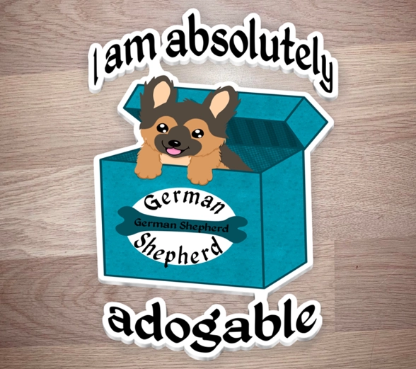

Sticker Library
Information
If a box don't have a button yet, it means that this sticker isn't ready to be sold. However, the button will be up as soon as it is.

Excited Puppy - German Shepherd
This adorable German Shepherd couldn't stay in the box. It was to excited to jump out and meet you. In this Greek blue colored box with nice interior, and sleek outside. Because nothing is to good for man's best friend. I love dogs and I wanted to share a bit of that love with you. Therefore I made this adogable little sticker, for everyone who loves dogs.
The Rosie Way
This compass started as a fun little idea between friends, and then turned into something more. With bright colors for all four directions but none for the compass and rose themselves. It was meant to represent that even though the road you are on might seem grey, then there is always colors to find if you start walking down a different path.The Duckling
The Duckling is what started the sticker journey. A fun little doodle on piece of paper, that then turned into a digital drawing. With a fun little pun and lots of colors. A little duckling is so adorable and cute. The saying the prettiest of them all, just seemed to fit it. This one might not have the most thought put into it, but it is special in its own way.
Pretty Kitty
The Pretty Kitty, that spell binds you with its eyes. We all know the legends behind black cats, and how they are supposed to be a familiar it is also how this sticker came to life. Having the galaxy in its eyes. Making the sky draw you into its spell. With the adorable face of a cat, but the dream filled eyes of magic that draw you in. How can you tell this pretty kitty no?